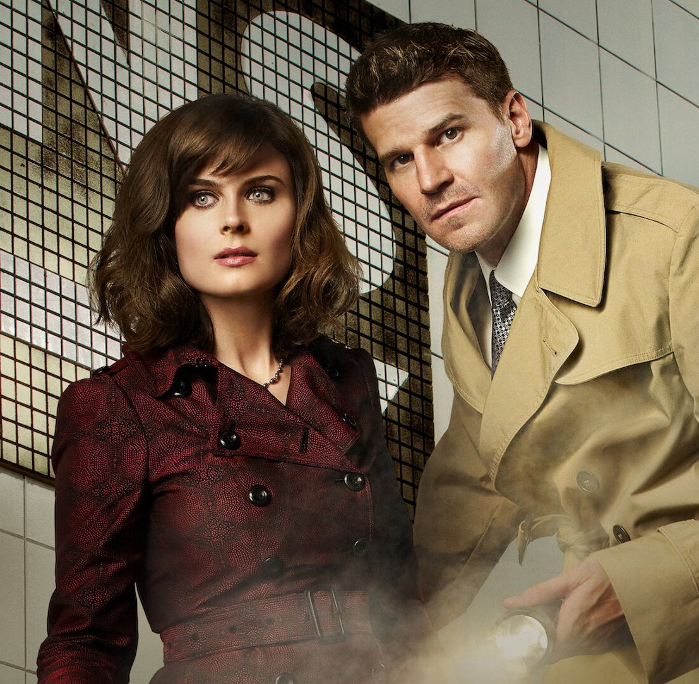
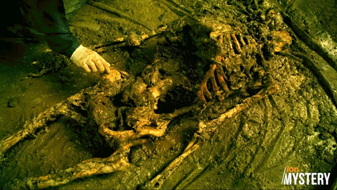
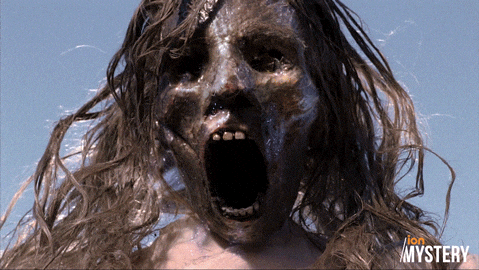

Sigla
La sigla di Bones è immediatamente riconoscibile grazie al suo mix di elettronica, percussioni e sonorità “scientifiche” che richiamano l'ambiente del laboratorio del Jeffersonian. Composta dai The Crystal Method, la musica d'apertura cattura fin da subito l'atmosfera della serie: dinamica, investigativa, moderna. Le tracce utilizzate negli episodi alternano brani originali a canzoni di artisti contemporanei, spesso scelte per sottolineare momenti emotivi o transizioni narrative. L'uso di beat elettronici e ritmi sincopati contribuisce a dare alla serie un'identità sonora precisa, capace di accompagnare sia le analisi forensi sia le tensioni drammatiche tra i personaggi.

Horror
In Bones, l'elemento horror si esprime attraverso un crudo body horror, dove la rappresentazione iperrealistica della decomposizione sfida i canoni del genere procedurale. Dai rituali cannibalici di Gormogon alle installazioni macabre del Fantocciaio, la serie fonde la fredda analisi scientifica con atmosfere gotiche e disturbanti, trasformando il resto umano in un fulcro di orrore viscerale e psicologico.
